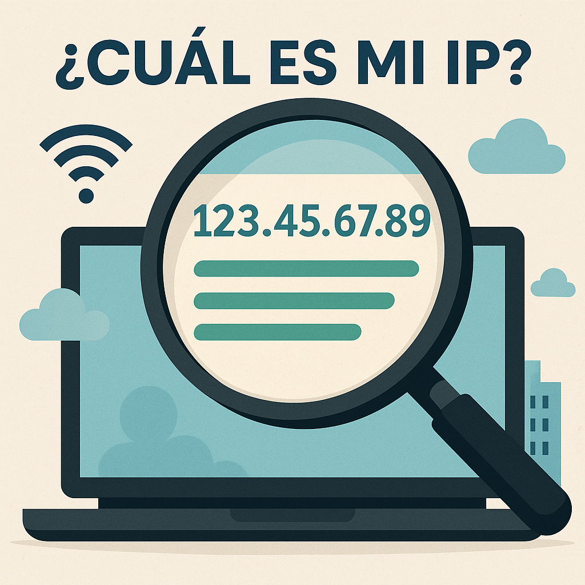

¿Cuál es mi IP y para qué sirve? Explicación sencilla y práctica
🌠Introducción
¿Alguna vez te has preguntado qué es una dirección IP o por qué algunos sitios web te dicen "Tu IP es..."? En este artÃculo te explicamos de forma clara qué significa esa famosa IP, cómo saber cuál es la tuya y para qué puede servirte en tu dÃa a dÃa.
🔠¿Qué es una dirección IP?
Una dirección IP (Internet Protocol) es como el "DNI" de tu dispositivo cuando se conecta a internet o a una red local. Es un número único que identifica tu equipo y permite que reciba y envÃe datos correctamente.
Ejemplo de IP: 192.168.1.10 o 80.25.240.33
📶 Tipos de IP: pública y privada
- IP pública: es la que identifica tu conexión en internet. Es visible para los sitios web que visitas.
- IP privada: se usa dentro de tu red doméstica (como la que asigna tu router a tu móvil o PC).
🧠¿Cómo saber cuál es mi IP?
Puedes usar nuestra herramienta gratuita: ¿Cuál es mi IP?
En solo un clic te muestra tu IP pública actual.
ğŸ› ï¸ ¿Para qué sirve conocer tu IP?
- Diagnosticar problemas de conexión
- Configurar servidores o cámaras IP
- Acceder remotamente a tu red o dispositivos
- Jugar online sin errores de NAT
🔠IP dinámica vs IP estática
- IP dinámica: cambia cada vez que reinicias el router o tras un tiempo. Es la más común.
- IP estática: no cambia. Útil para servidores o accesos remotos estables.
âš ï¸ ¿Es peligrosa tu IP pública?
No necesariamente, pero puede revelar tu ubicación aproximada. Por eso, muchos usuarios usan VPN para ocultarla y proteger su privacidad.
❓ Preguntas frecuentes (FAQ)
¿Mi IP pública cambia?
SÃ, si es dinámica. Puedes consultarlo entrando varias veces a lo largo del dÃa.
¿Puedo cambiar mi IP pública?
SÃ. Reiniciando el router o usando una VPN.
¿Dos dispositivos pueden tener la misma IP?
Sólo si están en redes diferentes (por ejemplo, dos móviles con IP privada 192.168.1.5).
✅ Conclusión
Saber tu IP es el primer paso para entender cómo funciona tu conexión. Es un dato útil para técnicos y también para usuarios curiosos. Usa nuestra herramienta para consultarla siempre que quieras.
👉 Ver mi IP ahora